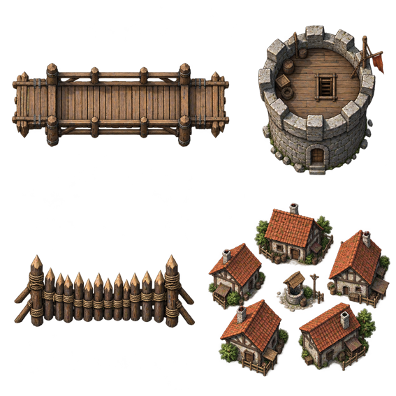

Mini-carte · terrains JRPG et constructions
Herbe, forêt, colline, relief rocheux et eau. Raccords continus entre
voisins, diagonales et berges. Ponts et constructions sur une couche
transparente distincte.
Chargement des atlas…
 Herbe · forêt · colline / roche · eau · variante d'herbe
Herbe · forêt · colline / roche · eau · variante d'herbe

Pont · tour / barricade · village